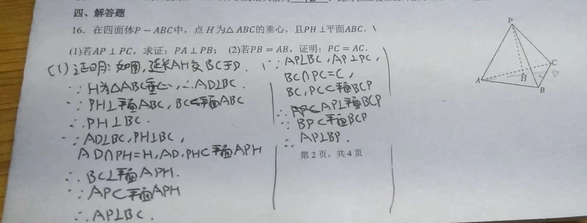

cyrxdzj的文化课学习笔记 数学008 废话满篇：浅谈怎么运用灵活的思维做一道数学题
创建 内容更新 导出 2024-03-08 22:41:12 2024-06-15 23:31:46 2024-06-15 23:33:54 原文链接：https://blog.cyrxdzj.eu.org/2024-03-08-CyrxNote-Math-008/
作者：cyrxdzj
本文件仅为静态文件。如有条件，建议访问原文链接。
这篇文章将讲解，我在做一道数学题时运用的思维。
可能有点难懂，不过后文将附上例子详细说明。
可能废话很多，毕竟这种文章我也不太会怎么写……
可能没什么作用，额，毕竟思维这种东西不太会教，我自己数学也不敢说很好……
从条件思考
题干大概分两种，“条件”和“要求”。本段将讲讲“条件”。
读题
拿到一道数学题之后，可以看一下，这些题有什么条件。
不要试图盯着一整道题看。你不可能一口吃下一大碗饭吧？所以，一句一句，以标点符号为分割地读吧。
给与题目无关的干扰条件是小学才做的事情，我上初中之后就没见过了。
对于每一个条件，有些条件很简单，就只是为了其它条件服务的。所以，第一次读题，如果十秒钟之内不知道一个条件是什么作用的，就跳过去吧，或许它只是为了后面的条件服务的。
寻找破题点
所谓破题点，指的是这道题应该从哪里开始。
看起来越复杂的条件，越有可能成为破题点。
例如，如果某个条件只是“某个变量=某个数”，“某条边的长度=？？？”之类的，那么它大概只是为后面的条件服务的；而如果某个条件在定义的时候还包含其它条件，例如，$a=?,b=?,f(x)=a\times b+x$ 中 $f(x)$ 包含 $a$ 和 $b$，那么这个条件就很有可能是破题点。
如果一个条件不被任何其它条件所包含，那么它就很有可能是破题点。那么我们可以一层一层地找这个条件包含了哪些条件，一层一层地分析每个条件，就能拼凑出破题点条件的全貌。
我们也可以根据已知的条件，想想有哪些等式或不等式可以套用在这个条件上。例如，如果题目给出了三角形的部分的边或角的数据，我们可以使用正/余弦定理，求出剩余的数据。
分析条件
当找到觉得有作用的条件时，我们可以想一下，这个条件意味着什么？根据这个条件，可以推出怎样的条件以供继续解题？有什么知识点是符合这个条件的？
条件的转化一定要有依据。一个依据也是要符合要求才能用的。如果看到一个条件差一点就可以根据一个依据转化，我们可以试试把这个条件通过一些变换，先让这个条件符合要求，再使用这个依据。
这里的依据，可以来自课本，也可以来自平常学习中积累的一些 Trick。
条件的转化最好转化为充分必要条件，使得这两个条件可以互相双向转化。如果不能，需要注意分类讨论。
一般情况下，足够多的“必要非充分条件”合并起来，也可以成为“充分必要条件”。对此有个俗称叫“细心”，“注意到了题目的坑点”。
而足够多的“充分非必要条件”合并起来，也可以成为“充分必要条件”。这就是所谓的“分类讨论”。
例如，我们看到“两个非零向量，$\overrightarrow{a}+t\overrightarrow{b}$ 与 $\overrightarrow{a}-t\overrightarrow{b}$互相垂直，向量 $\overrightarrow{a}、\overrightarrow{b} $ 不共线且长度已给出“，我们就应该转化为，$(\overrightarrow{a}+t\overrightarrow{b})\cdot(\overrightarrow{a}-t\overrightarrow{b})=0$，然后，由于向量与自己的数量积等于向量长度的平方，我们就可以将其转化为一个一元二次方程，进而求解问题。反之亦然。
耐心点，能做什么做什么，一步一步慢慢来
看看一道式子，能做什么就做什么吧，搞不好会与其它条件搭配，成为一个很厉害的条件。如果不确定的话，还是在草稿纸上多算算吧。
这里的“能做什么”，其实有时候你认真看题就会发现，也没啥可做……
条件转换在一道题里通常很多。没有关系，别着急。
别忘记所有条件
在做题时别忘了之前所有的条件。比如说，有一次，我在作业里写“当 $m>0$ 时怎么怎么样，当 $m=0$ 时怎么怎么样，当 $m<0$ 时怎么怎么样”。结果写完了，抬头看看题，“今有正实数 $m$……”。我都被气死了……
再比如，在某次周测上，我求出了 $t\in(-2,+\infty)$ 就兴冲冲地结束了，却忘了题目中的“今有正实数 $t$”。
从要求思考
接着看看“要求”。
所谓“要求”，其实就是题目要求的东西，或者题目要证明的式子。
我们可以看看，要先算出/证明出这个要求，需要先算出/证明出哪些条件，这又要算出/证明出哪些条件。如果“从条件思考”和“从要求思考”能汇合，这道题就解出来了。
例如，题目问“函数 $f(x)$ 的取值范围”，一般情况下，我们首先得把解析式算出来吧？
然后，我们可以找到题中 $f(x)=…$ 的内容，看看里面还有没有没算出来的东西，再想想怎么化简。
其实从某种程度上来讲，“要求”也是一种“条件”。
假装成立的条件
再开始讲之前，我们先说说，由 $x$ 知 $y$ 条件组。（$x$ 和 $y$ 都是一个数。很多情况下 $y=x+1$。）
看看这道题：

可以发现，以下三个条件，是 由 $2$ 知 $3$ 条件组：$AP\bot CP,AP\bot BC,AP\bot BP$。若任意 $x=2$ 个条件符合，则另外的 $y-x=3-2=1$ 个条件一定符合。
而我们可以发现，这三个条件中，一个是题目已知的，另一个是需要证明的，那么我们可以想想，假如需要证明的条件 $AP\bot BP$ 已经成立，我们还能证明什么出来？再看到 $AP\bot CP$ 这个已知条件，这不就是直线垂直于平面嘛？于是我们就能证明 $AP\bot 平面 BCP$，进而证明 $AP\bot BC$。
但很显然上面的东西不能写答卷上，总不可能题目要你证明这个条件，然后你说“因为题目要证明，所以显然成立”吧？所以，我们的目标，就是证明 $AP\bot BC$。
想证明 $AP\bot BC$ 也不容易，但是证明 $BC\bot 平面 AHP$ 就可以啦。这次需要一些辅助线。而辅助线要通读全题，看到“$H$ 为 $\bigtriangleup ABC$ 垂心”这个条件才能作出来。
这个方法一般用在证明题中，但是非证明题有时也可以使用。
积累 Trick
什么是 Trick
所谓 Trick，就是课本没有直接写的，但是在考试中使用可以大幅提升做题效率的方法。也有人称其为二级结论（是一个东西吗？）。
Trick 这个词我是从信息学竞赛学来的。
Trick 有大有小。小的 Trick 可以迅速搞定一个步骤，而大的 Trick 可以决定一道题是否解得出来。
例如，顶角为 $120^{\circ}$ 的等腰三角形，底是腰的 $\sqrt{3}$ 倍；等腰三角形的底边上的中线同时也是底边上的高，等等。这些属于小 Trick。
但是，让我们看看高考题：


第（2）小题乍一看无从下手，但是我们其实可以设 $AD=x$，然后计算三棱锥 $P-ACD$ 的体积（用 $x$ 表示），然后，从 $A$ 做垂直于平面 $CDP$ 的垂线 $AE$，然后作 $EF\bot PC$，垂足为 $F$。可以发现 $PC\bot 平面 AEF$。这样，$\frac{AE}{AF}=\frac{\sqrt{42}}{7}$。而我们慢慢推，是可以用 $x$ 表示 $AE$ 的，而 $AF=\sqrt{2}$ 是固定的。这不就可以算出来 $x$ 的值嘛。
可以参考前面的“从要求思考”的内容，更好地理解如何用 $x$ 表示很多东西。
另外，后面的内容会提到“带着未知数计算”。看完这些内容再回来，或许你会更加理解。
可以发现，“等积原理”这个 Trick 相当好用。
为什么要积累 Trick
中国的高考数学有个趋势（或者一直都是这样的？）：争分夺秒。多争取一分钟的时间，或许就有可能改写你的分数。
另请注意，高考打铃之后一定要停笔！否则这一科直接没分！重要的事情不用说三遍，一遍就够了！
同时，最近的高考数学对于思维的考察好像很严，反正不是只看课本就能上的。
但我们想，出题老师的思维毕竟也是有限的。如果我们能在限时内达到出题老师的思维（至少，不能达到也得做到基本覆盖），我们就能拿到高分。
因此，我们能把这些思维化作一个个小小的 Trick，发现即使用，就能大幅节省思考的时间。然后拿到高分。
如何积累 Trick
日常，我们可以做一些大题，之后一定要对答案。
尽可能将答案拆碎，分析答案的每一步有什么值得借鉴的地方。然后，将它们化为自己的方法。
看看答案中有什么让你“眼前一亮”的东西？它就是你要找的 Trick。
需要注意，每一个 Trick 一定要知道是怎么来的，完全了解它的原理和使用要求。以后再使用的时候，再据此判断是否使用，以及怎么使用。
必要时，Trick 可能需要先截取或修改再使用。完全了解一个 Trick 的运行机理之后，修改起来就能更得心应手。我们一般称其为“举一反三”。
下面是一个举一反三的例子。
我们应该知道，一个直三棱柱的外接球的半径怎么算。但我们别忘记，这个算法是基于“各顶点与球心距离相等”这个基础上。同时，外接球其实也是平面几何中外接圆的扩展版本。
所以，如果把直三棱柱换成另一个物体，比如，三棱锥，但是其中一条侧棱垂直于一个面（设它为基准底面，那么这条棱的另一个不在此面上的点称作顶点）。那么，我们就可以先找到这个底面的外接圆圆心，然后过这个圆心作一条垂直于底面的直线，整个物体的外接球球心一定在这条直线上。再设真正的外接球球心距离底面的距离为 $x$，搞个勾股定理就可以了。如果不太明白这段话，还请读者自行画这么一个三棱锥。
再换一下，如果没有这样的棱呢？那么我们可以设置一个方便的面为底面，再好好利用题中的条件，也可以解决问题。
另外，上面的等积原理，就是我在地铁上积累的。（吐槽一句，广州地铁 5 号线真的晃啊……）
关于未知数
带着未知数计算
有些时候，题目中的一些式子是需要用未知数表示的。但未知数也是数，也可以进行四则运算。所以，结合上文的“1-2、分析条件”，列出算式和方程后，便可进行求解。
同时，我们可以想想，“如果我其实已经知道了未知数，我们会怎么做？”
例如，今有定义在 $R$ 上的函数 $f(x)=\sin x+a\cos x$ 的最大值为 $2$，实数 $a>0$。求 $a$ 的值。
我们就可以想想，如果我其实已经知道了 $a$，我会怎么求最大值？显然，我们会用辅助角公式，得出 $f(x)=\sqrt{1+a^2}(\frac{1}{\sqrt{1+a^2}}\sin x+\frac{a}{\sqrt{1+a^2}}\cos x)$，最大值就是 $\sqrt{1+a^2}$。这样我们就可以列出等式，$\sqrt{1+a^2}=2$，得出 $a=\sqrt3$，搞定。
需要注意，这么做有时需要分类讨论。
不止是未知数，一些未知量也可以这么推出来。如果不知道一个量，有时候可以假装已经知道了，然后慢慢推，推出新的条件之后就可以真的知道这个未知量了。
使用少量未知数表示出很多东西
这个方法的典型运用是几何中动点（或者动线、动角）问题。我们可以将“时间 $t$”作为“少量变量”，然后将与解题有关的点的坐标、线段长度等用这个 $t$ 表示。接着，根据题目要求，可以列个方程，完成求解。
尽可能使未知数少，如果可以的话最好只有一个。这样在列方程的时候，由于未知数很少，更方便解出来。不过考虑到方便，可以列出两个未知数，然后慢慢推出两个未知数的关系。
把相同的东西用两种方法表示出来，就是方程
如题。
例如，当题目同时给出了某个角的正弦值，和这个角的终边过的坐标，即使这两个东西都带有未知数（只要是同一个），我们就可以列出方程，求解未知数。
再例如，如果有两个以 $\overrightarrow{a}$ 和 $\overrightarrow{b}$ 为基底的向量 $\overrightarrow{c}=\overrightarrow{a}+\overrightarrow{b}$ 和 $\overrightarrow{d}=\overrightarrow{a}+2\overrightarrow{b}$，四个向量的模长已知，$\overrightarrow{c},\overrightarrow{d}$ 的夹角已知，我们可以把 $\overrightarrow{c}\cdot\overrightarrow{d}$ 用两种方式表示出来，一个是标准的向量数量积公式，一个是不直接算 $\overrightarrow{c}\cdot\overrightarrow{d}$，而是 $(\overrightarrow{a}+\overrightarrow{b})\cdot(\overrightarrow{a}+2\overrightarrow{b})$，将这两个式子列成方程，就可以知道 $\overrightarrow{a}$ 和 $\overrightarrow{b}$ 的夹角余弦值了。
好好利用知识点
看到一些条件之后，我们可以想想，书上的哪些公式或知识点，可以套用这些条件？
有些时候，要学会反着使用公式。有些公式，可以做到“知道其中的几个数据，就可以求出另外剩余的数据。这个剩余的数据是谁都没关系”。
就好比，我们小学时就学会了 $s=x_1+x_2$ 的公式（就是加法），其中 $s$ 代表 $x_1$ 和 $x_2$ 的和。我们只要知道了 $s,x_1,x_2$ 中的任意两个，就可以求出另外一个了。
把不知道的数据一个一个求出来，就可以算出这道题了。
例子
让我们来看一道题。
今有定义域为 $R$ 的奇函数 $f(x)$，且 $f(3)=3$。对于所有的 $x_1,x_2\in[0,+\infty),x_1\neq x_2$，都有 $\frac{x_1f(x_1)-x_2f(x_2)}{x_1-x_2}>0$。试求不等式 $(x+2)f(x+2)<9$ 的解。
首先，我们看到这个 $\frac{x_1f(x_1)-x_2f(x_2)}{x_1-x_2}>0$。这并不意味着 $f(x)$ 单调递增，因为题目可没说 $\frac{f(x_1)-f(x_2)}{x_1-x_2}>0$。可见，依据也是要符合要求才能用的。
但是，我们注意到这里的函数，格式都很统一，都是 $x\times f(x)$ 的形式。那么，我们便可以重构函数，设 $g(x)=x\times f(x)$。接着，重写整个题目中的 $f(x)$，变成 $g(3)=3\times f(3)=3\times3=9$，对于所有的 $x_1,x_2\in[0,+\infty),x_1\neq x_2$，都有 $\frac{g(x_1)-g(x_2)}{x_1-x_2}>0$。试求不等式 $g(x+2)<9$ 的解。可见，转化条件可以依靠平常积累的 Trick，因为这个做法课本上没讲……
接着，回顾所有条件。我们终于得到了一个在 $[0,+\infty)$ 单调递增的函数 $g(x)$。但是，$g(x)$ 只是在 $[0,+\infty)$ 单调递增啊，区间 $(-\infty,0]$ 可没说。
我们想想，这么个将一个区间的条件推广到另一个区间的做法（还是 $y$ 轴左右两边的区间），一般会用什么知识点？对，奇偶函数。数学考试争分夺秒，熟练掌握各种知识点，才能在考场上快速想出来，并使用。
但是 $g(x)$ 是奇函数还是偶函数呢？我们再想想，证明一个函数的奇偶性，一般用什么方法？对，计算 $g(-x)=(-x)\times f(-x)=x\times f(x)=g(x)$，所以函数 $g(x)$ 是偶函数。等等，$f(-x)=-f(x)$ 怎么来的？因为题目的第一句话就是 $f(x)$ 是奇函数啊。可见，我们可以根据式子的形式，推测出需要知识点，并回顾之前所有条件，找出条件证明。
好，我们集齐了 $g(-3)=g(3)=9,g(x+2)<9$，因此 $g(x+2)<g(3),-3<x+2<3$。等等，为什么 $-3<x+2$？可以画个标准的二次函数看看，设 $f(x)=x,g(x)=x\times f(x)=x^2$，这个函数符合题目中所有条件。然后，再画一条 $y=9$ 的横线，我们需要让函数值在这条横线之下。
最后，根据 $-3<x+2<3$ 可以算出 $x\in(-5,1)$。搞定。
后记
我有一位初中同学，上了高中之后，在学习上我还会和她有一些交流。
她的文科还算可以，语文和英语和我差不多，但数学的成绩，实在是太差了……
她偶尔会找我请教一下数学。在这个过程中，我渐渐地发现了很多疑点。看起来，书上的知识点，她是会的。我自认为高一上学期最难背的“和差角公式”，她也能背下来。
我也问过她，课上的例题会做吗？她给出的答复是，“会。课上的例题比较简单”。
虽然我倒是觉得，她会做就是简单，不会就是难，而不是指知识点本身的难易程度。
同时，在给她讲解一些比较难的题目时，我也注意到，她听得懂我的讲解，看得懂答案。但刚刚给出这道题时，她并不会做。
我现在上高中。数学老师说，“数学，是一门成绩极差很大的学科。有的人能考一百多分，有的人只能考30几分”。为什么她会这么说呢，因为，上次周测，当满分 133 时，有人能考 126 分，有人只能考 39 分。这其实是一个比较极端的例子，但是我们班的数学周测，极差也挺大的。
这不禁引起了我的思考。
数学考试不考背诵，而考察对知识点的灵活应用。在着重于知识点本身的同时，如果不会用知识点，那又能怎样呢？
像上面的例子，这位 39 分的同学，也有在认真听课。但好像，除了听课以外，她似乎出了点问题？
但问题是，相比于“知道知识点”，什么是“会用知识点”？其实我也不知道诶……
因此，我写下了这篇与之前的 7 篇文章风格都不同的文章。
我知道我没有教育经验，也不敢妄加评论，就写点皮毛吧。
希望这篇文章能对读者有所帮助。